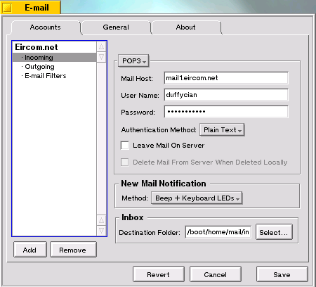
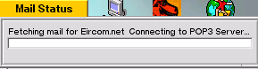

E-mail Preferences
E-mail Preferences

E-mail Preferences
You set up your e-mail environment in the E-mail preferences. To launch E-mail, click on the Be logo, open the Preferences item, and click on E-mail :

When you launch E-mail, this is what you see:

When you get to this section, select Add to make a new e-mail account
You must select the format Inbound and Outbound from the Account type menu before preceeding
Account Name Whatever you wish your e-mail account to be called.
Real Name Your name.
Return Adress Your return e-mail adress
POP3/IMAP This lets you set your e-mail type. It is probably POP

User Name.
Your User name is usually the first part of your e-mail address-- it's the "user" in "user@company.com".
Password. If you don't enter a password, you're asked for one whenever you make a mail connection.
POP host This is the Internet domain names or IP addresse of the servers that handle your incoming mail. If this is not set, you will not be able to receive incoming mail.
Authenticiation Method (POP Only) This is the method of security your mail provider uses. Its probably plain text, but they can tell you if its not.
Folder (IMAP Only) This lets you specify the IMAP folder you are using on the server. Its probably INBOX
Leave Mail On Server This option leaves your e-mail on the server, so it can be downloaded again later.
Delete Mail From Server when Deleted Locally This option works with the previous one. It removes mail from the server when you delete it on your own machine
New Mail Notification Method Lets you select which method is used to alert you to a new e-mail arriving
Inbox Destination Folder Lets you specify your inbox. You should leave it at /boot/home/mail/in, and you must not place it off /boot, especially not off a BeOS partition.
Source Folder The folder from which mails to be sent are taken. You should not change this.
SMTP Host The outgoing server of your e-mail provider. If this is not set, this account cannot send e-mails.
User Name Your SMTP user name. Usually not nessacery, usually greyed out
Password Your SMTP password. Usually not nessacery, usually greyed out
Authenticiation Method
This is where you select your authenticiation method. There is: None (most common), ESMTP (encrypted, rare), and POP3 Before SMTP (slightly more common than ESMTP). The second one needs the password box filled in

These menus let you set how often the system should check for incoming mail, and send new outgoing messages. During the check, new incoming messages are downloaded from the POP host to your computer, and outgoing messages are uploaded from your computer to the SMTP host.

|
If you connect to your network through Dial-up Networking, checking mail may automatically start a PPP connection, unless you check "Only when PPP is active" |

Check Show status window to put a Mail Status window on your desktop (shown below).
Window Look. Changes the appearance of the Status window
Window Visible On. Selects which workspaces to show the Window on
The Mail Status This window shows you what the Mail Daemon is doing right now. When downloading or uploading mail, it gives you an e-mail count and a kilobyte size count.
Auto-start the Mail_Daemon. If this is not ticked, you should tick it now. It loads the mail_daemon at boot, and launches the deskbar icon for the Daemon.
When you finish configuring mail preferences, click Save in the E-mail window. Click Check Now to check for new messages immediately.
The BeOS defines the /boot/home/mail directory as the repository for mail. Incoming mail messages are placed in /boot/home/mail/in. Messages that you send are placed in /boot/home/mail/out. If you create your own "mailbox" folders--into which you sort your incoming mail, for example--you're encouraged to place them in /boot/home/mail alongside the folders that Be creates.

|
The mail folders aren't created until you receive or send mail. |
The easiest way to open one of the mailbox folders is to pop up the mailbox icon's context menu (in Deskbar's Status View).

Open Inbox opens the incoming mail folder in a Tracker window.
Open Mail Folder opens the /boot/home/mail folder.
Any Tracker folder window that contains an e-mail message is automatically given extra e-mail attributes that you can see when you put the window in List View mode.

The Status of an e-mail message is either New or Read (for in-coming messages), or Pending or Sent (for out-going). The Priority attribute is provided as a convenience--you can set an e-mail's priority to whatever you want. The values of the rest of the e-mail attributes are taken from the message itself.
There are a number of ways to check for new mail:
Each of these methods also sends any Pending out-going mail (messages that you've written but haven't yet sent).